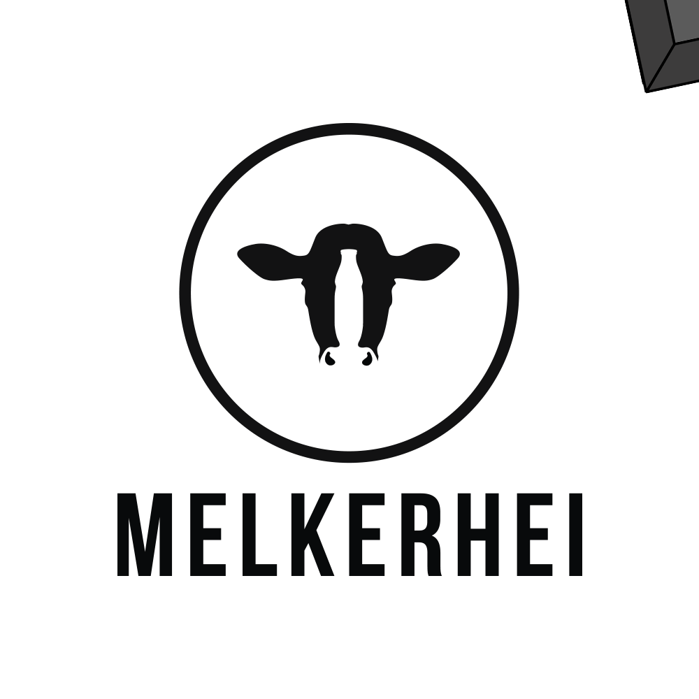

Stempel
Toen ik dit maakte konden groepen er met school of gezinnen even langstkomen. Dit gaf me het idee: wanneer ze dit op hun story zetten op Instagram en het leuk vonden, kunnen ze deze toevoegen. Als een soort van teken dat het leuk is.
Rollende kaas

Kort maar krachtig: een leuke manier om aandacht te trekken naar de naam van het bedrijf.